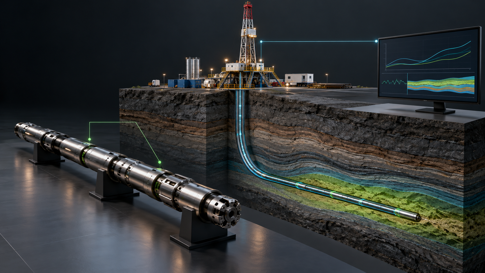
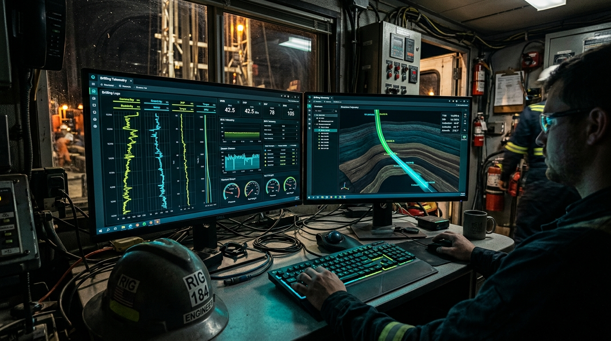
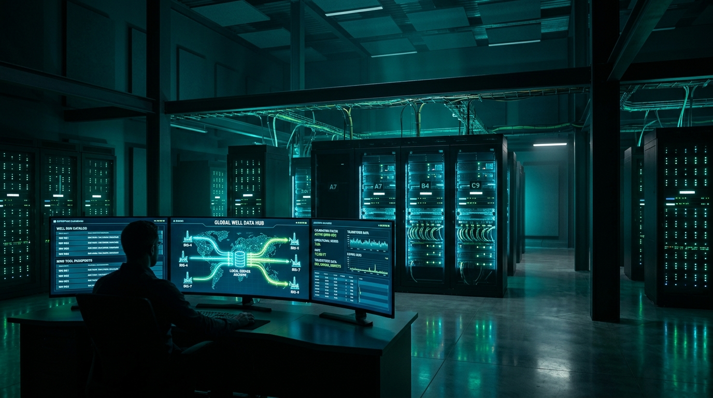
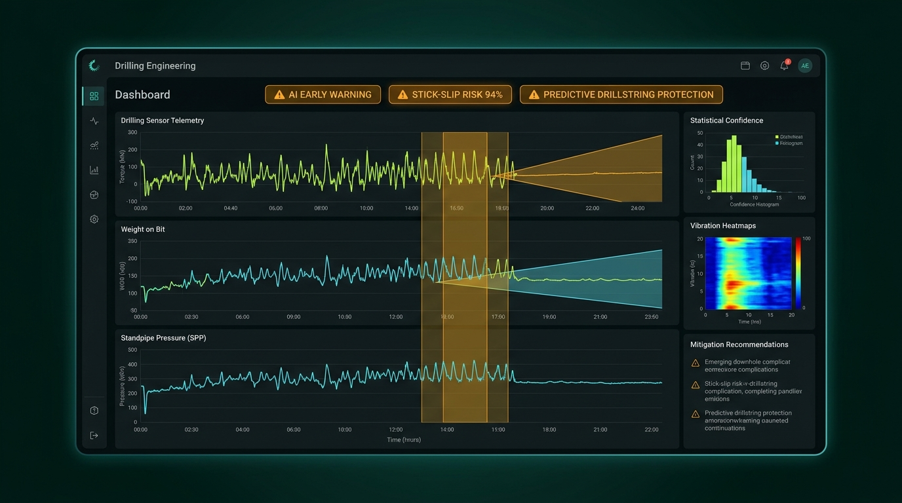
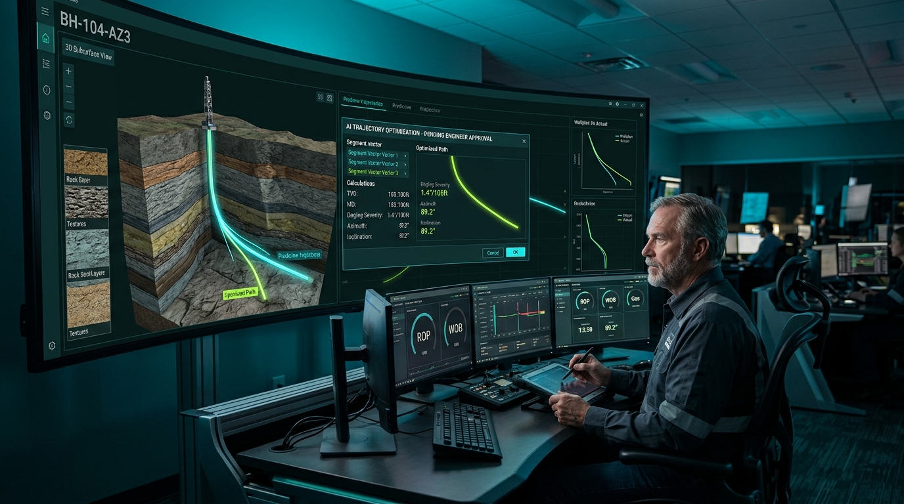

Точная основа
BlenderСобственные модели приборов, стыки секций, китбоксы и корзины, близкие планы машины, долото и управляемая камера. Оборудование сохраняем отдельным слоем.
Одна последовательность из 14 сцен: 2 минуты оборудования и 3 минуты ПО, разработки математического ядра, целевой архитектуры обмена и будущей ИИ-поддержки.
Собственные модели приборов, стыки секций, китбоксы и корзины, близкие планы машины, долото и управляемая камера. Оборудование сохраняем отдельным слоем.
Проверяем доступные в аккаунте режимы на коротком кадре. Генерация помогает с окружением и атмосферой; точность оборудования при перерисовке всего кадра не гарантируется.
Совмещаем точный 3D-слой и окружение, реальные экраны, линии данных и титры. Здесь же монтаж, дикторская дорожка, звук и цвет.
Работающие возможности записываем из актуального ПО. Математическое ядро показываем как разработку, ИИ — как направление развития. В технических кадрах сохраняем реальную геометрию оборудования; концептуальные интерфейсы подписываем. ИИ-помощник не подменяет математические расчёты и проверку инженером.
14 дней — рабочий план после утверждения сценария и подготовки исходников. Резерв на рендер, повторные генерации и правки согласуется отдельно. Сохранённые замечания и совместные правки диктора остаются на главной странице по ссылкам из каждой сцены.
| Время | Сцена | Статус и производство |
|---|---|---|
| 00:00–00:15 | 01 · Представление компании «ГеоТехНавигация» и единого контура | Оборудование · по реальным моделям 3D-логотип + рендеры + графика |
| 00:15–00:35 | 02 · База: проверка и комплектование оборудования | Оборудование · по реальным моделям 3D-сцена базы + модели приборов |
| 00:35–00:55 | 03 · Логистика и поставка: от базы компании до буровой площадки | Оборудование · по реальным моделям Гибрид: 3D-груз + ИИ-окружение |
| 00:55–01:15 | 04 · Двухсекционная телесистема и беспроводная идентификация | Оборудование · по реальным моделям Точная 3D-анимация + инфографика |
| 01:15–01:40 | 05 · Работа оборудования на забое: измерения в процессе бурения | Оборудование · по реальным моделям Сложная 3D-анимация в разрезе скважины |
| 01:40–02:00 | 06 · Гидравлический пульсатор и декодирование сигнала на поверхности | Оборудование · по реальным моделям Гибрид: 3D-пульсатор + графика канала |
| 02:00–02:25 | 07 · Drill Monitor: данные на рабочем месте инженера | Экраны ПО · готовность сверяем Захват реального ПО + моушн-графика |
| 02:25–03:00 | 08 · Математическое ядро: траектория, механика и гидравлика | Математическое ядро · в разработке Математическое ядро + проверяемые расчётные схемы |
| 03:00–03:25 | 09 · Масштабирование: буровые, каналы связи и центр сопровождения | Целевая архитектура · интеграция Карта сети 2.5D/3D + схема потоков данных |
| 03:25–03:45 | 10 · Серверный каталог: контекст измерений и история оборудования | Целевая архитектура · интеграция Гибрид: визуализация сервера + структура БД |
| 03:45–04:05 | 11 · Развитие: ИИ помогает инженеру с рутинной аналитикой | Направление развития · концепция Концепция ИИ-помощника + интерфейсная графика |
| 04:05–04:25 | 12 · Развитие: анализ признаков осложнений | Направление развития · концепция Инфографика предиктивной модели + ПО |
| 04:25–04:45 | 13 · Инженерное решение: рекомендация, проверка и подтверждение | Направление развития · концепция Гибрид: инженер + интерфейс рекомендаций |
| 04:45–05:00 | 14 · Замкнутый цикл сервиса и финальный масштаб экосистемы «ГеоТехНавигация» | Жизненный цикл · итог экосистемы Гибрид: рендеры + схема экосистемы + титры |
Оборудование · по реальным моделям

Референс композиции. Изображённые интерфейсы — ориентир; в финале заменяются реальными экранами или подписанными макетами.
Вступление с 3D-логотипом компании, переход через световой блик к панорамной композиции: база, телесистема, буровая и контрольный центр.
Проявление объёмного логотипа Geo-TN, затем плавный пролёт по ключевым узлам экосистемы компании.
Анимация векторного/3D логотипа и композитинг со слоями оборудования в DaVinci Resolve / Fusion.
Световой блик переходит на металлический китбокс в производственном цеху компании.
«ГеоТехНавигация» объединяет скважинное оборудование, инженерный опыт и программную платформу Drill Monitor. Покажем путь комплекса от подготовки на базе до работы на буровой и сопровождения нескольких объектов в едином цифровом контуре.
Точный фирменный знак. Не подменять реальные приборы сгенерированной геометрией.
Оборудование · по реальным моделям

Референс композиции. Изображённые интерфейсы — ориентир; в финале заменяются реальными экранами или подписанными макетами.
Проезд камеры по рабочему месту, открытому китбоксу 2955×1000×850 мм и каркасным корзинам. Затем закрытие крышки и подготовка к погрузке.
Калибровка прибора на стенде, фиксация серийного номера и электронного паспорта, закрытие крышки китбокса.
Использовать утверждённые 3D-модели приборов и упаковки по точным габаритам заказчика.
Закрытый китбокс и корзины перемещаются в зону погрузки на полуприцеп.
Работа начинается на базе: инженер проверяет состав комплекса и готовит его к отправке. Электронные модули размещают в защищённых металлических китбоксах, корпусные приборы — в транспортных корзинах. Идентификаторы связывают оборудование с его паспортом и сервисной историей.
Показывать реальные операции проверки; поверку или сертификацию не изображать без подтверждения. Корзины и китбоксы — по предоставленным референсам.
Оборудование · по реальным моделям

Референс композиции. Изображённые интерфейсы — ориентир; в финале заменяются реальными экранами или подписанными макетами.
Три динамичных плана: крепление груза на синем полуприцепе с оранжевым тягачом 6×6 → движение по трассе → прибытие на кустовую площадку.
0–6 с: фиксация китбоксов и корзин; 6–14 с: движение тягача к месторождению; 14–20 с: заезд на буровую и разгрузка.
Крупные планы груза и машины — управляемое 3D по фотореференсу заказчика; дальние планы дороги и атмосферы — выверенные ИИ-вставки.
Открытие китбокса на буровой переходит к считыванию приборов сканером.
Укомплектованный комплекс отправляется на месторождение. Надёжная транспортная упаковка защищает высокоточную электронику на сложных трассах и зимниках. На буровой площадке оборудование принимает полевая партия — комплекс полностью готов к сборке и спуску в скважину.
Сохранить единый внешний вид тягача, полуприцепа и контейнеров во всех кадрах.
Оборудование · по реальным моделям

Референс композиции. Изображённые интерфейсы — ориентир; в финале заменяются реальными экранами или подписанными макетами.
Крупный план сервисного сканера у корпуса прибора → детальный 3D-план резьбового соединения двух секций на столе ротора.
Импульс беспроводного считывания ID → соосное сближение и свинчивание двух секций → визуализация локальной межсекционной связи.
Полноценная 3D-анимация в Blender по конструкторским моделям компании + графический слой идентификаторов и межсекционного обмена.
Собранная колонна начинает спуск в скважину — камера уходит за ней под землю.
На буровой инженер считывает приборы беспроводным сервисным сканером и сверяет конфигурацию комплекса. Двухсекционная конструкция позволяет быстро соединить секции перед спуском. Локальный беспроводной обмен между ними показан отдельно от сервисного считывания и канала передачи забойных измерений.
Точная кинематика сборки. Сервисный сканер, межсекционный обмен и скважинный канал — три разные связи. Взаимозаменяемость показывать только для согласованных исполнений.
Оборудование · по реальным моделям

Референс композиции. Изображённые интерфейсы — ориентир; в финале заменяются реальными экранами или подписанными макетами.
Продольный разрез скважины: камера следует от долота к измерительным модулям реальной КНБК. Геометрию и масштаб сверить с моделями.
Разрушение породы долотом, поочерёдная подсветка инклинометра, гамма-модуля и резистивиметра, вращение лопаток турбины генератора в потоке раствора.
Детальная 3D-сцена подземного бурения в Blender с полупрозрачным разрезом корпуса и пластовыми изолиниями.
Поток данных от измерительных модулей передаётся в узел гидравлического пульсатора.
После сборки комплекс спускают в скважину. В процессе бурения измерительные модули получают данные об ориентации инструмента и свойствах окружающих пород. Состав измерений зависит от установленной комплектации. В кадре раскрываем реальные приборы и их место в компоновке.
Расположение, типы датчиков и источники питания сверить по фактической комплектации. Никаких вымышленных диаметров и каналов.
Оборудование · по реальным моделям

Референс композиции. Изображённые интерфейсы — ориентир; в финале заменяются реальными экранами или подписанными макетами.
Крупный 3D-план работы клапана пульсатора → вертикальный пролёт за волной давления вверх к датчику на манифольде и наземному декодеру.
Срабатывание клапана пульсатора, формирование кодовой пачки импульсов, подъём сигнала на поверхность и превращение волны в цифровой график.
12 секунд 3D-анимации пульсатора + векторная визуализация гидравлического канала и осциллограммы декодера.
Декодированный пакет по кабелю влетает прямо в интерфейс ПО Drill Monitor (переход ко Второй части ролика — 02:00).
Гидравлический пульсатор передаёт забойные измерения импульсами давления в буровом растворе. На поверхности датчик и приёмный комплекс выделяют сигнал на фоне помех и декодируют данные. Так информация из скважины поступает на рабочее место полевого инженера.
Разделить движение раствора и распространение импульсов давления. Спутниковая связь начинается у наземного шлюза.
Экраны ПО · готовность сверяем

Референс композиции. Изображённые интерфейсы — ориентир; в финале заменяются реальными экранами или подписанными макетами.
Из декодера камера переходит в инженерный вагон. Общий план специалиста сменяется крупным захватом реального интерфейса Drill Monitor.
Данные появляются в карточке рейса и на кривых. Инженер выбирает замер и открывает расчётную задачу.
Фон вагончика и инженер — постановочный референс. Содержимое мониторов заменяем записью актуальной программы; условные данные подписываем.
Выбранный замер и состав КНБК переходят в расчётную задачу математического ядра.
На рабочем месте полевого инженера Drill Monitor связывает измерения со скважиной, рейсом и компоновкой. Специалист сопоставляет забойные и наземные параметры, видит историю и качество данных. Единый контекст помогает перейти от наблюдения за показателями к подготовке инженерного решения.
Не выдавать сгенерированную картинку монитора за реальный интерфейс. Поддерживаемые каналы сверить перед записью.
Математическое ядро · в разработке
Крупный управляемый показ: слева исходные замеры и параметры, в центре расчёт, справа траектория план–факт и график гидравлических параметров. На кадре читаемый бейдж «Математическое ядро · в разработке».
0–8 с: ввод замера и выбор КНБК. 8–20 с: расчёт и результат траектории. 20–29 с: механика и гидравлика как направления ядра. 29–35 с: инженер сверяет результат; камера начинает уход к карте объектов.
Работающие расчёты записать из проверенной сборки. Для ещё разрабатываемых модулей — подписанная схема без вымышленных числовых результатов. Формулы и вычисления отделены от ИИ-помощника.
От выбранной скважины — управляемый взлёт камеры через облака к карте нескольких объектов.
В Drill Monitor развивается собственное математическое ядро. Замеры, параметры компоновки и условия задачи становятся исходными данными для расчёта. Инженер получает числовой результат, траекторию или график и проверяет их в контексте скважины. Разработка объединяет направления траектории и геонавигации, механики КНБК и гидравлики. Расчётные модули проходят поэтапную проверку перед применением.
У каждого расчёта видны входные данные, единицы, результат и статус готовности. BSR не называть общей гарантией безопасности соединения.
Целевая архитектура · интеграция

Референс композиции. Изображённые интерфейсы — ориентир; в финале заменяются реальными экранами или подписанными макетами.
Бесшовный взлёт камеры от буровой площадки к карте страны и спутниковой группировке: светящиеся потоки данных с множества месторождений сходятся в единую точку — Контрольный Центр.
Камера раскрывает несколько буровых на карте. Голубые пакеты сходятся через наземные шлюзы к серверу; янтарный поток показывает рекомендации и подтверждения.
Анимированная карта сети и векторная схема потоков (на базе assets/11-data-network.svg и композитинга в Fusion).
Лучи данных входят в здание Контрольного Центра прямо в центральный серверный узел.
От одной буровой переходим к сети объектов. Целевая архитектура Drill Monitor предусматривает обмен через наземные шлюзы и доступные каналы связи, включая спутниковый. Центр сопровождения получает общую картину по скважинам. Число подключений и параметры обмена подтверждаются для конкретного внедрения.
Маршрут: прибор → декодер → наземный шлюз → канал связи → сервер → центр. Масштаб карты иллюстративный; производительность не заявлять без испытаний.
Целевая архитектура · интеграция

Референс композиции. Изображённые интерфейсы — ориентир; в финале заменяются реальными экранами или подписанными макетами.
Камера входит в центр сопровождения; вместо абстрактного «мозга» раскрывается понятная иерархия данных скважины и паспорта прибора.
Пакет получает контекст скважины, рейса и источника. Отдельно появляются результаты расчётов, история решений и сервисные события.
Совмещение визуала серверного узла с чёткой анимированной инфографикой структурирования и каталогизации базы данных.
Каталог данных становится опорой будущего аналитического помощника.
В целевом серверном контуре измерения связываются со скважиной, стволом, рейсом и конкретным прибором. Важны время, глубина, единицы, источник и качество данных. История измерений, инженерных решений и обслуживания формирует основу для совместной работы и последующей аналитики.
Целевая схема интеграции, а не утверждение о готовом серверном внедрении. Обработку обрывов связи, восстановление и права доступа подтвердить по реализации.
Направление развития · концепция

Референс композиции. Изображённые интерфейсы — ориентир; в финале заменяются реальными экранами или подписанными макетами.
В центре сопровождения инженер открывает концептуальную панель помощника. Постоянная подпись «Направление развития · концепция».
Из отмеченного события формируется проект сводки со ссылками на исходные каналы; инженер проверяет текст и результат расчёта.
Постановочный интерьер + подписанный макет будущего помощника. Реальные экраны мониторинга остаются отдельным слоем.
От сводки события переходим к перспективному анализу признаков осложнений.
Следующее направление развития — локальный ИИ-помощник инженера. Ему планируется поручить подготовку сводок, поиск подозрительных изменений и черновиков отчётов. Помощник будет связывать выводы с исходными данными и результатами расчётов. Инженер проверит предложенную оценку и примет решение.
Локальное размещение — целевой вариант внедрения. Не утверждать текущую готовность модели, защищённость контура или обучение на собственной базе без подтверждения.
Направление развития · концепция

Референс композиции. Изображённые интерфейсы — ориентир; в финале заменяются реальными экранами или подписанными макетами.
Концептуальная схема: исходные каналы → признаки изменения → проверка качества → предположение о риске → оценка инженером. Бейдж развития остаётся видимым.
Никакого обратного отсчёта до аварии и вымышленных процентов. Подсвечивается подозрительный участок, рядом — исходные данные и пометка «требует проверки».
Контролируемая векторная анимация. Графики схематические, подписаны как концепция; фактические прогнозы и статистику не выдумывать.
Гипотеза передаётся специалисту как задача для проверки и подготовки рекомендации.
В перспективе накопленный опыт позволит развивать модели оценки рисков. Они будут сопоставлять текущие параметры с проверенными примерами и помогать инженеру замечать признаки осложнений. Перед применением предстоит подтвердить точность и ограничения моделей на испытаниях.
Не заявлять объём выборки, время упреждения или доказанную точность. Аналитическая модель не заменяет проверяемые инженерные расчёты.
Направление развития · концепция

Референс композиции. Изображённые интерфейсы — ориентир; в финале заменяются реальными экранами или подписанными макетами.
DD-инженер в центре сопоставляет данные и результат расчёта. Затем явная смена плана на полевого инженера в вагончике, который получает рекомендацию.
Подготовка рекомендации → проверка DD-инженером → доставка полевой команде → подтверждение и результат в истории. ИИ-поддержка подписана как развитие.
Интерьер и инженер + реальные экраны, где готовы. Будущий обмен и ИИ-поддержка — подписанная концептуальная инфографика.
Подтверждение связывается с историей рейса и жизненным циклом оборудования.
В целевом процессе решение принимает инженер. Он проверяет данные и расчёт, оценивает подготовленную рекомендацию и направляет её полевой команде. На буровой подтверждают получение и сообщают результат. Решение и обратная связь сохраняются в истории скважины, замыкая контур сопровождения.
Обратный поток заканчивается у полевой команды. Решение принимает человек; прямое управление приборами и автопилот не заявляются.
Жизненный цикл · итог экосистемы

Референс композиции. Изображённые интерфейсы — ориентир; в финале заменяются реальными экранами или подписанными макетами.
Короткий переход через сервисное обновление паспорта прибора к финальной панораме всей экосистемы и фирменному пэкшоту Geo-TN (geo-tn.com).
Все элементы (Производство, Оборудование, Буровые, Сервер, Локальный ИИ и DD-Центр) сходятся в единый контур и завершаются фирменным логотипом.
Финальный композитинг, сведение дикторской дорожки, саунд-дизайн всего 5-минутного ролика и рендер мастер-файла.
Затемнение и финальный звуковой акцент.
Рейс завершается, оборудование возвращается на базу. История его работы помогает планировать проверку, обслуживание и следующую отправку. «ГеоТехНавигация» и Drill Monitor связывают оборудование, данные и инженерные решения. Развитие системы продолжается под контролем специалистов.
Вернуть тот же тягач, полуприцеп, китбоксы и корзины. Завершить точным логотипом и адресом geo-tn.com.